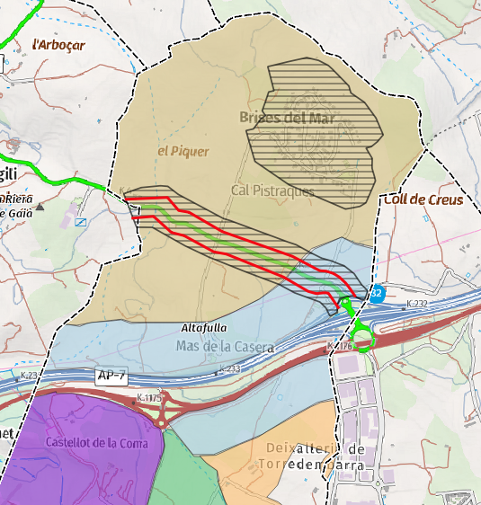
MODIFICACIÓ PUNTUAL DEL POUM D’ALTAFULLA PER A LA REGULACIÓ D’USOS DEL SNU
OrdenacióClient: Ajuntament d’Altafulla
Data: 2025-2026
Assessorament per a la regulació en el Sòl No Urbanitzable de les activitats de càmping i de les instal·lacions de producció d’energia a partir de fonts d’energia renovables. Realització dels Documents ambientals necessaris per a la tramitació ambiental ordinària.
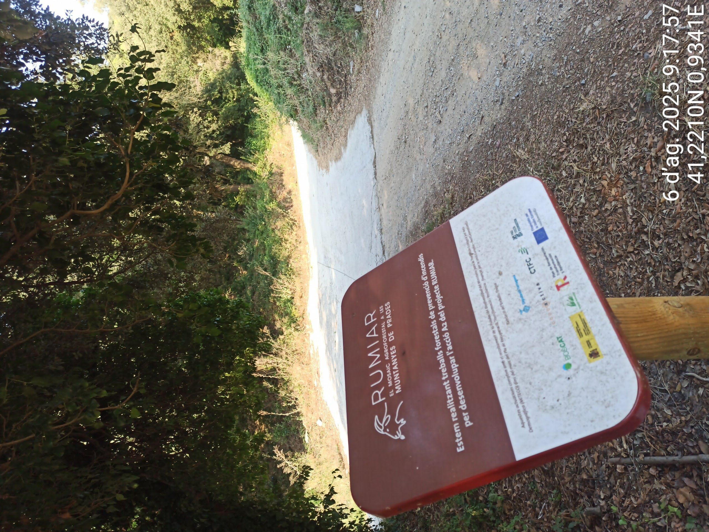
PROJECTE RUMIAR - CONTROL AMBIENTAL DE TREBALLS FORESTALS
VigilànciaClient: Asolgrup i Diputació de Tarragona
Data: 2025
Control ambiental dels treballs forestals del projecte “RUMIAR El mosaic agroforestal a l’espai d’interès Natural de les Muntanyes de Prades”, finançat per la Fundación Biodiversidad i la Unió Europea (NExt Generation EU). Definició del Pla de Seguiment ambiental, realització del control ambiental, càlcul d’Índex de biodiversitat, definició i aplicació de mesures preventives i compensatòries i elaboració de la documentació tècnica ambiental.
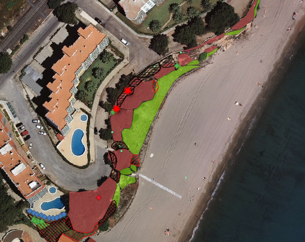
CARACTERITZACIÓ DELS HÀBITATS I ESPÈCIES INVASORES DE LA LÍNIA COSTANERA DE MIAMI PLATJA
BiodiversitatClient: Asolgrup i Ajuntament de Miami Platja
Data: 2021
Estudi de les espècies invasores presents al litoral marítim de Miami Platja i estat dels ecosistemes litorals.
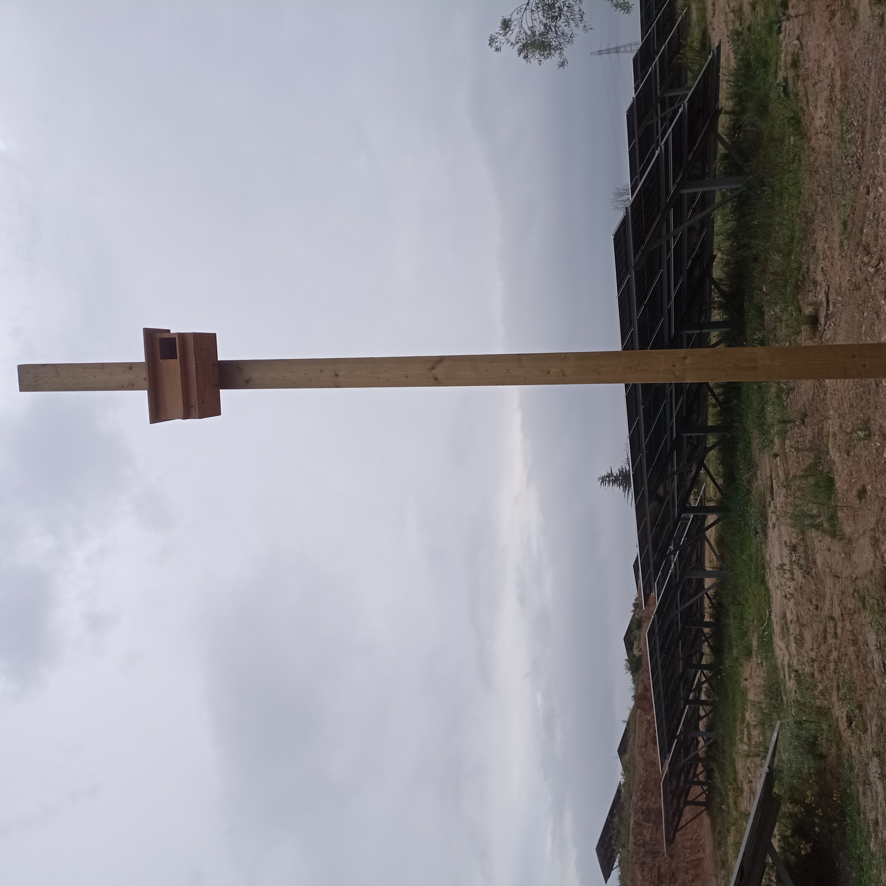
PLANTA SOLAR FOTOVOLTAICA A RIUDOMS
OrdenacióClient: AKUERDA
Data: 2023
Assessorament i elaboració de la documentació tècnica necessària per a la tramitació i posada en marxa d’una Planta Solar Fotovoltaica al terme municipal de Riudoms. Elaboració dels estudis inicials de fauna, Document d’impacte Ambiental, Estudi d’Impacte i Integració Paisatgística i instal·lació de les mesures ambientals compensatòries.
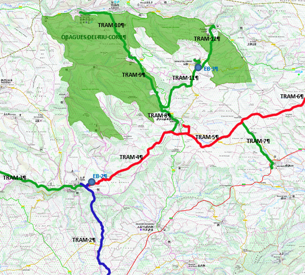
PLA ESPECIAL URBANÍSTIC AUTÒNOM D'INFRAESTRUCTURES DEVASTAMENT D'AIGUA (CONCA DE BARBERÀ)
OrdenacióClient: Diputació de Tarragona
Data:
Elaboració dels documents ambientals per a l’Avaluació Ambiental Estratègica Ordinària del Pla Especial d’Infraestructures d’Abastament d’aigua per a 10 municipis de la Conca de Barberà. Així mateix, elaboració de l’Estudi d’Impacte i Integració Paisatgística i de l’Estudi d’Afectacions Agràries.
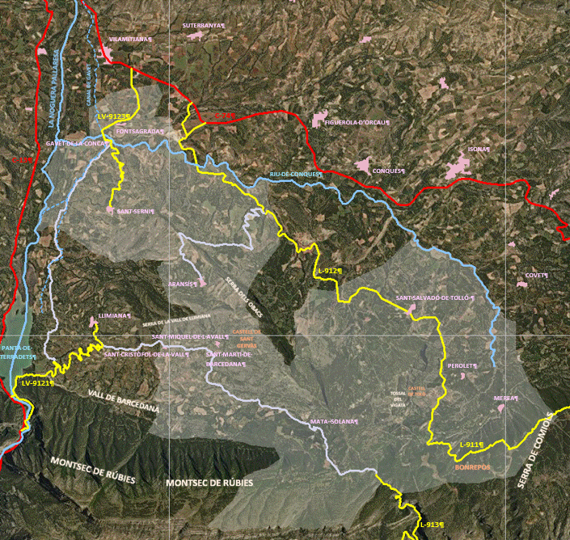
PLA D’ORDENACIÓ URBANÍSTICA MUNICIPAL DE GAVET DE LA CONCA
OrdenacióClient: Ajuntament de Gavet de la Conca i Valeri Consultors
Data: 2025
Elaboració dels documents ambientals per a l’Avaluació Ambiental Estratègica Ordinària del Pla d’Ordenació Urbanística Municipal de Gavet de la Conca al Pallars Jussà.

AVALUACIÓ D’IMPACTE AMBIENTAL - MILLORES HORTA GUINARDÓ
OrdenacióClient: BIMSA, AJUNTAMENT DE BARCELONA
Data: 2018
Document ambiental per a l’avaluació d’impacte ambiental simplificada del projecte executiu de les millores puntuals de Cal Notari, camí de Cal Notari i entorns, al Barri de la Font del Gos, al Districte de d’Horta-Guinardó, a Barcelona
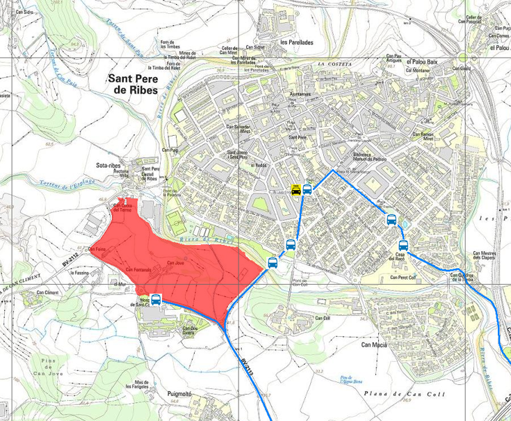
ESTUDI D’AVALUACIÓ DE LA MOBILITAT GENERADA DEL PPU6 CAN JOVE
OrdenacióClient: RC Arquitectura i Projecte Urbà, SCP
Data: 2025
Elaboració de l’Estudi d’Avaluació de la Mobilitat Generada de la Modificació Puntual i redacció del Pla Parcial Urbanístic 6 “Can Jove” a Sant Pere de Ribes.
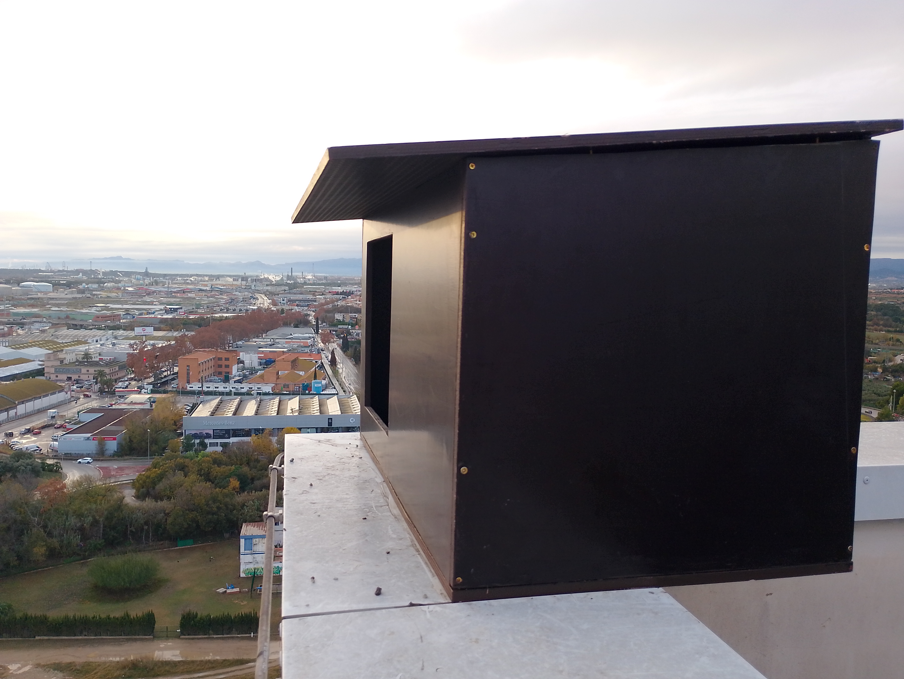
PROGRAMA DE FOMENT DE LA BIODIVERSITAT URBANA DE TARRAGONA
BiodiversitatClient: Ajuntament de Tarragona (Dep. Medi Ambient)
Data: 2025-2026
Estudi dels rapinyaires presents a la ciutat, espais que ocupen i col·locació de caixes niu per afavorir la seva sedentarització.
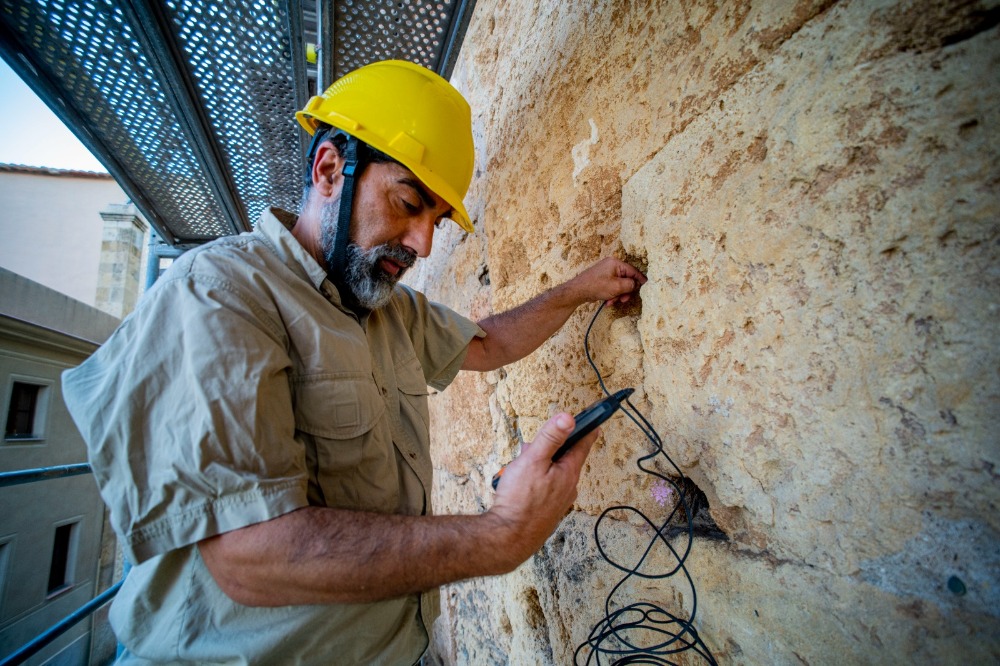
SEGUIMENT AMBIENTAL TORRE DEL PRETORI A TARRAGONA
VigilànciaClient: Ajuntament de Tarragona (Dep. Patrimoni)
Data: 2023
Diagnosi inicial de les poblacions i nidificació de falciot (Apus apus) a la Torre del Pretori de la ciutat de Tarragona i Proposta d’actuació a la colònia de falciot (Apus apus).

ESTUDI DE L’IMPACTE D’UN EDIFICI DE TARRAGONA PER COL·LISIONS D’AUS
BiodiversitatClient: Ajuntament de Tarragona (Dep. Medi Ambient)
Data: 2015-2016
Estudi de les espècies que col·lisionen amb un edifici a la Plaça Imperial Tàrraco de Tarragona. Avaluació i proposta d’actuació per reduir o eliminar el problema.
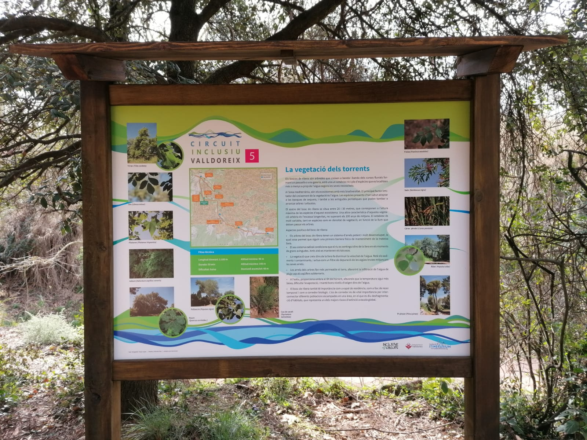
DISSENY D’ITINERARIS DE NATURA ALS TORRENTS DE VALLDOREIX
BiodiversitatClient: EMD Valldoreix
Data: 2019
Estudi de camp de les espècies de papallones, aus i plantes remeieres presents al municipi. Redacció del text, disseny de plafons informatius i il·lustracions.
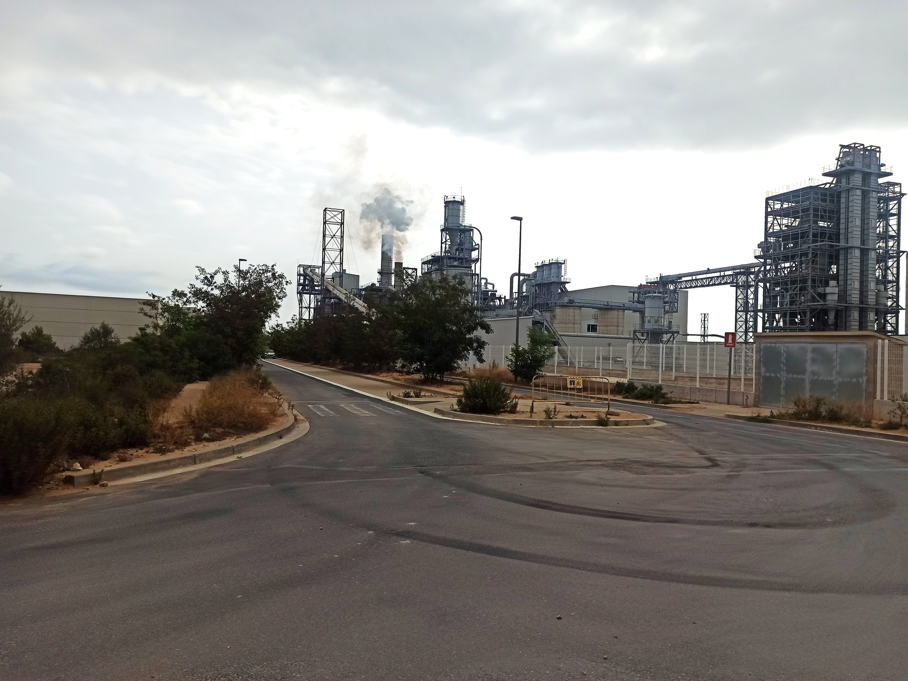
DIAGNOSI PRÈVIA D’IMPACTE I INTEGRACIÓ PAISATGÍSTICA. PLA DIRECTOR URBANÍSTIC D’ACTIVITAT ECONÒMICA CATALUNYA SUD
OrdenacióClient: Direcció General d’Ordenació del Territori, Urbanisme i Arquitectura (Generalitat de Catalunya)
Data: 2024
Redacció dels treballs de la Diagnosi prèvia d’impacte i integració paisatgística associats al Pla director urbanístic d’activitat econòmica Catalunya Sud, per a la reordenació i ampliació de l’activitat econòmica i logística existent en un àmbit de 675 ha als termes municipals de Tortosa i l’Aldea. Identificació d’elements paisatgístics rellevants, criteris i directrius de compatibilitat amb la legislació vigent i avaluació de la idoneïtat de la proposta.
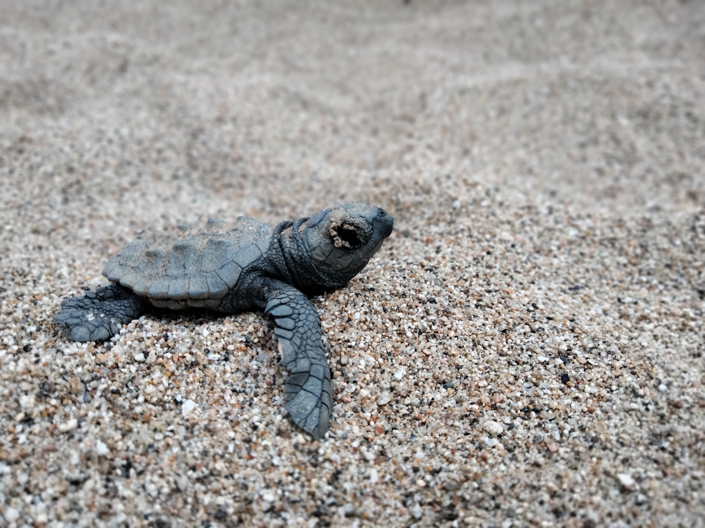
COORDINACIÓ VOLUNTARIAT I CUSTÒDIA DEL NIU DE TORTUGA BABAUA
VigilànciaClient: Ajuntament de Tarragona
Data: 2020 i 2024
Control i seguiment del procés de desenvolupament dels ous de tortuga babaua a la Platja de la Savinosa (Tarragona). Coordinació dels voluntaris per a la custòdia del niu i sensibilització dels usuaris de la platja vers la tortuga babaua.

INFORME AMBIENTAL DEL PROJECTE DE MANTENIMENT DE LA CINTA TRANSPORTADORA DEL POU IV A LES MINES DE POTASA DE SÚRIA, AL PLA DE REGUANT
OrdenacióClient: Súria ICL Iberia
Data: 2025
Estudi d’impacte ambiental del projecte de millores de la cinta transportadora de potassa, ubicada en un espai natural protegit (PEIN i Xarxa Natura 2000) al Pla de Reguant. Identificació d’impactes i proposta de mesures preventives i correctores.